Малые существа
| Вид существа | Здоровье | Уязвимости | Множители урона в защищённые/уязвимые места. | Добыча | ||||||||||||||||||||
|---|---|---|---|---|---|---|---|---|---|---|---|---|---|---|---|---|---|---|---|---|---|---|---|---|
| 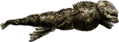Ползун
Встречается в открытом море, в пещерах, на заброшенных маяках; При ранении на время отступает; Так же отвлекается на трупы и ест их. ID: Crawler |
80 | Голова |
|
Инопланетная кровь (100%)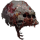Маска ползуна (2%) | ||||||||||||||||||||
| 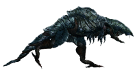Грязевой раптор
Встречается в открытом море, в пещерах, на заброшенных маяках; Имеет броню, которая ломается после единоразового получения 0,8 урона (После вычита модификатора брони) (Поэтому автоматический дробовик против них не эффективен, ибо не ломает броню.). ID: Mudraptor |
150 | Голова |
|
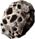Гидроксиапатит (100%)
 Останки водолаза (22,72%)
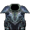Шкура грязевого раптора (4,54%)
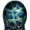Яйцо грязевого раптора (4,54%) Останки водолаза (22,72%)
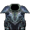Шкура грязевого раптора (4,54%)
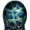Яйцо грязевого раптора (4,54%)
|
||||||||||||||||||||
| 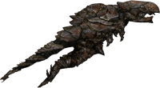Грязевой раптор ветеран
Встречается в открытом море, в пещерах, на заброшенных маяках; Имеет броню, которая ломается после единоразового получения 0,8 урона (После вычита модификатора брони) (Поэтому автоматический дробовик против них не эффективен, ибо не ломает броню.). ID: Mudraptor_veteran |
300 | Голова |
|
Гидроксиапатит (100%)
Останки водолаза (22,72%)
Шкура грязевого раптора (4,54%)
Яйцо грязевого раптора (4,54%)
|
||||||||||||||||||||
| 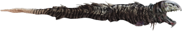Акулий тигр
Встречается в открытом море, в пещерах; Укусы имеют 50% шанс на заражённую рану; При атаке вцепливается в тебя и начинает метать, усложняя прицеливание в него. ID: Tigerthresher |
150 | N/A | N/A | Инопланетная кровь (100%)
Останки водолаза (25%)
|
||||||||||||||||||||
| 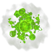Лейкоцит(Накладывает паралич)
Встречается на таламусе; Имеет заряженную атаку, что при попадании вызовет взрыв радиусом 3м и убьёт лейкоцит; Обычная атака гарантированно накладывает паралич, так что лучше избегать ближнего контакта люболй ценой. ID: Leucocyte |
25 | Ожоги |
|
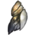Параликс (20%) | ||||||||||||||||||||
| 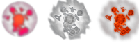Терминальная клетка
Встречается на таламусе; При смерти взрывается радиусом 3м, нанося немалый урон структурам и оглушая на (0,75); Рекомендуется или убивать издали, или игнорировать, сосредоточившись на убийстве мозга таламуса. ID: Terminalcell |
10 | Ожоги |
|
- | ||||||||||||||||||||
| 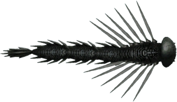Шипостай
Встречается в открытом море; Вместо тарана пускает в подлодку свои шипы. ID: Spineling |
50 | Голова |
|
Инопланетная кровь (100%)
 Шип шипостая (100%)
Шип шипостая (+1) (25%) Шип шипостая (100%)
Шип шипостая (+1) (25%)
|
||||||||||||||||||||
| 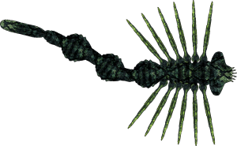Ядовитый шипостай(Отравляет морбузином)
Встречается в открытом море; Вместо тарана пускает в подлодку свои шипы; Шипы имеют 50% шанс отравить морбузином, так что после попадания СТРОГО рекомендуется провериться у медика. ID: Spineling_morbusine |
65 | Голова |
|
Инопланетная кровь (х2) (100%) 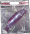Плавательный пузырь (100%) Морбузин (10%) | ||||||||||||||||||||
| 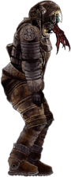Хаск
Встречается на заброшенных маяках, аванпостах, руинах и затонувших кораблях; Может лежать в отключке, но не умереть, так что лучше добивайте наверняка; Любой урон, наносимый хаском, хилит его на 5 хп за каждое попадание; Имеет реген (0,5 ХП/с). ID: Husk |
200 | Голова |
|
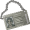Удостоверение личности (100%)
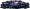Яйца каликса (27%)
 Жало хаска (9%) Жало хаска (9%)
|
||||||||||||||||||||
| 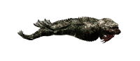Хасковый ползун
Встречается на заброшенных маяках, руинах и затонувших кораблях; В отличии от обычного ползуна, не отступает при ранении и не ест тела; Отличить от обычного ползуна можно по пасти, из которой лезет паразит; Любой урон, наносимый хаском, хилит его на 5 хп за каждое попадание; Имеет реген (1 хп/c). ID: Crawlerhusk |
100 | Голова |
|
Инопланетная кровь (27%)
Яйца каликса (27%)
Жало хаска (9%)
|
||||||||||||||||||||
| 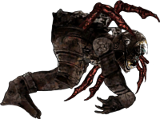Хасковый бродяга
Встречается на заброшенных аванпостах; Быстрый и низкий; Рекомендуется не подпускать его близко и попытаться устранить издали; Любой урон, наносимый хаском, хилит его на 5 хп за каждое попадание. ID: Husk_prowler |
400 | Голова |
|
Инопланетная кровь (100%)
Яйца каликса (100%)
Жало хаска (50%)
|
||||||||||||||||||||
| 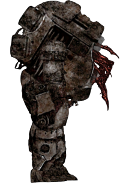Хасковый экзокостюм
Встречается на заброшенных аванпостах; Медленный, но живучий; Любой урон, наносимый хаском, хилит его на 5 хп за каждое попадание. ID: Husk_exosuit |
500 | Голова |
|
Удостоверение личности (100%)
Яйца каликса (100%)
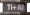Слиток титан + алюминий (х2) (100%)
Жало хаска (100%)
|
||||||||||||||||||||
| 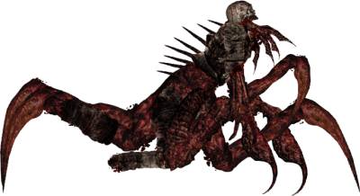Химера
Встречается на заброшенных аванпостах; Быстрая и живучая; Рекомендуется убивать её только командой или с помощью каликсанида; Любой урон, наносимый хаском, хилит его на 5 хп за каждое попадание. ID: Husk_chimera |
600 | Голова |
|
Инопланетная кровь (100%)
Яйца каликса (100%)
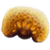Слизистые бактерии (100%)
Жало хаска (100%)
|
||||||||||||||||||||
| 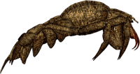Богомол(Накладывает паралич)
Встречается в пещерах; До приближения он зарыт и прижат к стене пещеры; При приближении выкапывается и стремиться нападать на игрока. ID: Mantis |
200 | НЕТ | - | Плавательный пузырь (100%) Параликс (50%) |
 Ожоги
Ожоги Урон (Весь)
Урон (Весь) Кровотечение
Кровотечение Огнестрельные ранения
Огнестрельные ранения Оглушение
ОглушениеБольшие существа
| Вид существа | Здоровье | Уязвимости | Множители урона в защищённые/уязвимые места. | Добыча | ||||||||||||||||||||||||||||||
|---|---|---|---|---|---|---|---|---|---|---|---|---|---|---|---|---|---|---|---|---|---|---|---|---|---|---|---|---|---|---|---|---|---|---|
| 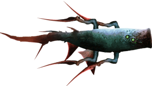Молотоглав(По возможности НЕ стреляйте в голову)
Встречается в открытом море; Таранит подлодку с разгону, а после снова уплывает на заход; Голова молотоглава является его самой бронированной частью, поэтому по возможности стреляйте в тело. ID: Hammerhead |
350 (Босс:400) | НЕТ |
|
Инопланетная кровь (75%) Плавательный пузырь (100%) 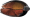Рёбра молотоглава (25%) | ||||||||||||||||||||||||||||||
| 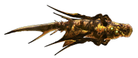Золотой молотоглав(По возможности НЕ стреляйте в голову)
Встречается в открытом море; Таранит подлодку с разгону, а после снова уплывает на заход; Голова молотоглава является его самой бронированной частью, поэтому по возможности стреляйте в тело. ID: Hammerheadgold |
400 | НЕТ |
|
Инопланетная кровь (75%) Плавательный пузырь (100%) Рёбра молотоглава (25%) | ||||||||||||||||||||||||||||||
| 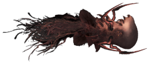Молотоглав матриарх(НЕ стреляйте в голову!!!)
Встречается в открытом море; Не агресивен, если не атаковать; Если спровоцирован, идёт на самоубийственный таран, после чего из головы выходят 30 мальков молотоглава. ID: Hammerheadmatriarch |
1000 | Голова |
|
Инопланетная кровь (х3) (100%) Плавательный пузырь (100%) | ||||||||||||||||||||||||||||||
| 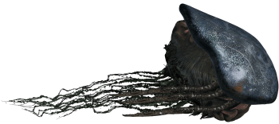Молох
Встречается в открытом море; Имеет панцирь, шанс на разружения которого требует единоразово нанести 15 урона (После вычита модификатора брони). ID: Moloch |
1250 (Босс: 1600) | Ядро под панцирем |
|
Гидроксиапатит (100%) 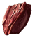Брокит (100%) 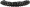Кость молоха (100%) 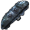Фрагмент панциря молоха (33%) | ||||||||||||||||||||||||||||||
| 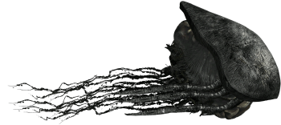Чёрный молох
Встречается в открытом море; Имеет панцирь, шанс на разружения которого требует единоразово нанести 15 урона (После вычита модификатора брони). ID: Molochblack |
1700 (Босс: 2200) | Ядро под панцирем |
|
Гидроксиапатит (100%) Брокит (100%) Кость молоха (100%) Фрагмент панциря молоха (33%) | ||||||||||||||||||||||||||||||
| 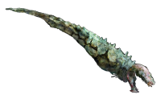Костяной акулий тигр
Встречается в открытом море; Укусы имеют 75% шанс на заражённую рану; При атаке вцепливается в тебя и начинает метать, усложняя прицеливание в него. ID: Bonethresher |
300 | Голова |
|
Инопланетная кровь (100%)
Останки водолаза (20%)
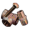Хлам (20%)
|
||||||||||||||||||||||||||||||
| 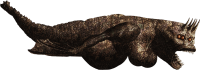Матка ползуна
Встречается в открытом море; При каждом получении 5 урона роняет яйцо, которое при контакте с поверхностью взрывается, но может быть собрано руками; Имеет дальнюю атаку, запускаящую 11 выше упомянутых яиц. ID: Crawlerbroodmother |
1000 | Голова |
|
Инопланетная кровь (x2) (100%)
 Яйцо ползуна (100%)
Плавательный пузырь (100%) Яйцо ползуна (100%)
Плавательный пузырь (100%)
|
||||||||||||||||||||||||||||||
| 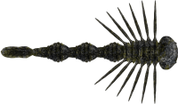Гигантский шипостай
Встречается в открытом море; Вместо тарана пускает в подлодку свои огромные шипы; При обнаружении гигантского шипостая нужно надеть скафандр, ибо шипы очень болючие. ID: Spineling_giant |
500 | Голова |
|
Инопланетная кровь (x3) (100%) Плавательный пузырь (100%) 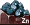Цинк (х3) (50%) 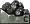Углерод (х3) (50%) | ||||||||||||||||||||||||||||||
| 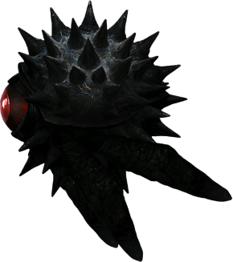Смотритель
Встречается в открытом море; Сам по себе не атакует подлодку и никак не агрессирует, предпочитая просто наблюдать, однако сам его взор опасен, поэтому его нужно сразу убивать; При приближении к подлодке от него будет слышен особый статический шум, присущий только ему; Его взгляд вызывает у человека постоянную тошноту и психоз, а существ Европы ускоряет и делает живучее; При получении урона отплывает, распыляя кислотный газ. ID: Watcher |
500 | Глаз |
|
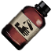Серная кислота (x4) (100%) 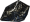Фрагмент панциря смотрителя (50%) |
 Рваные раны
Рваные раны Тупая травма
Тупая травма Повреждение глубоких тканей
Повреждение глубоких тканейТвари бездны
| Вид существа | Здоровье | Уязвимости | Множители урона в защищённые/уязвимые места. | Добыча | ||||||||||||
|---|---|---|---|---|---|---|---|---|---|---|---|---|---|---|---|---|
| 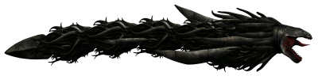Харибда
Встречается в бездне; Крайне быстра для своих габаритов; Стрелять ей нужно в пасть, под язык, туда засчитывает слабое место лучше всего. ID: Charybdis |
7500 | Пасть |
|
Остатки водолаза (100%)
 Титанит (1-2) (100%)
Хлам (2-4) (100%) Титанит (1-2) (100%)
Хлам (2-4) (100%)
|
||||||||||||
| 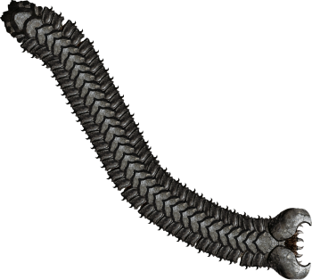Червь Рока
Встречается в бездне; Имеет бронированные чешуи вдоль всего тела; Чешуя разрушается с шансом 20% при единоразовом нанесении 0.5 урона (После модификатора брони); Часть хвоста можно оторвать с шансом от 0,25% до 10% (Шанс зависит от близости части к голове) при единоразовом нанесении 200 урона. ID: Endworm |
8000 | Участки без брони; Рот |
|
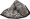Фрагмент панциря Червя Рока (100%) Фрагмент панциря Червя Рока (+1) (4,76%) Хлам (x2) (23,81%) | ||||||||||||
| Блокиратор
Встречается в бездне; Медленный, но осторожный; Сначала попытается прикрепиться языком, а после начнёт топить подлодку, время от времени покусывая её; Если прицепиться не сумел, отплывёт и будет наблюдать издалека, после чего попробует снова. ID: Latcher |
7000 | Спина (Между ног) |
|
Остатки водолаза (100%)
Ильменит (x2) (100%)
Противоударное волокно (1-3) (100%)
|